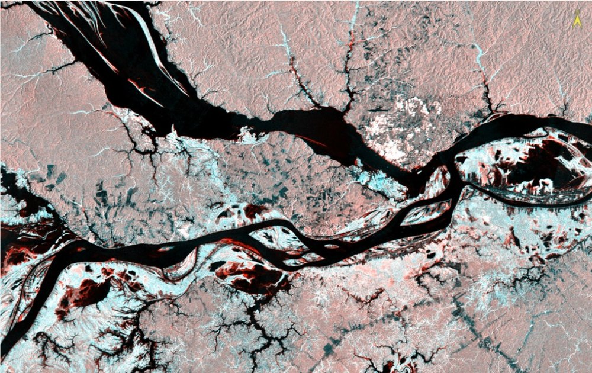

Amazon Flood Mapping with Two-Date Radar

Overview
A guided lab from Remote Sensing I at the University of Denver. Two JERS-1 L-band SAR mosaics from the Global Rain Forest Mapping project cover the meeting of the Rio Negro and the Solimões at Manaus: one at low water (August to September 1995) and one at high water (May to June 1996). Loading the low-water image as red and the high-water image as green and blue turns seasonal change into color. Cyan marks forest that floods at high water. Red marks floodplain that becomes open water. Gray and pink tones are upland forest that does not change, and the river channels stay black. The same lab opened with an ERS-2 C-band scene of Salt Lake City, used to work out the sensor look direction and to identify foreshortening and layover in the Wasatch foothills.
Results
- Floodplain (várzea) forest stands out in cyan: it brightens at high water, when standing water under the canopy creates a double bounce off the trunks.
- Floodplain at 957, 787 dropped from 158 to 37 as it went under open water, showing as red.
- The city of Manaus stayed near saturation on both dates (255 and 177) from corner-reflector returns.
- In the ERS-2 scene, bright west-facing slopes and building faces showed the sensor was looking west.
Processing
Coordinate Reference Systems
- Horizontal
- JERS-1 GRFM mosaics, about 100 m pixels; ERS-2 scene in slant range, not georeferenced
Methods
- Grayscale interpretation of backscatter for water, city, rain forest, and pasture
- Linked displays to compare low-water and high-water mosaics
- Two-date false-color composite: low water in red, high water in green and blue
- Pixel-value sampling at seven targets to tie each color to a scattering mechanism
- ERS-2 C-band scene: look direction, specular and double-bounce targets, foreshortening and layover
Deliverables
- Two-date radar change composite
- Target table linking color, backscatter values, and land-cover change
- Written interpretation of radar geometry and scattering
Key Technical Challenge
The two mosaics are not radiometrically matched, so brightness cannot be compared directly between dates. Each surface had to be read relative to its surroundings within one image, then confirmed with pixel values at seven sample targets.
Lessons Learned
Radar brightness is about roughness, geometry, and moisture, not color. Flooded forest is brighter than dry forest because the signal bounces from the water surface to the trunks and back, while open water is dark because it reflects the signal away. A two-date color composite is a fast first-pass change map, and it works in the wet tropics where cloud-free optical imagery is rare.